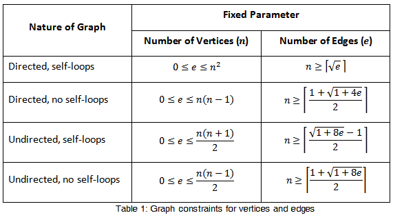
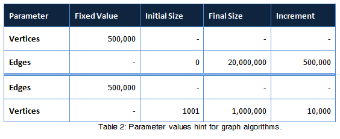

Introduction
AlgoBench is a software designed to demonstrate the runtime complexity of some common algorithms in the light of the "Algorithms and Data Structures" course (Inf2B). It involves configuring and executing algorithms with large inputs to generate runtimes that underscore the theoretical complexity of the algorithm.
It has two parts: The frontend, written in Java is called AlgoBench. That's where users can configure the algorithms to run, and the it handles the rest, including launching and communicating with the backend to get the task done. The backend, written in C++, is called AlgoBench_B. The C++ backend runs the algorithms. Also the results are viewed on the frontend.
Latest - Version 2.0 (2016):
The source code for the frontend can be found here:
https://bitbucket.org/EuphieW/algobench
The source code for the backend can be found here:
https://bitbucket.org/EuphieW/algobench_b
If you find any issues or bugs, please report here:
https://bitbucket.org/EuphieW/algobench/issues/new
Old - Version 1.0 (2015):
The source code for the frontend can be found here:
https://bitbucket.org/prof_zeezy/algobench
The source code for the backend can be found here:
https://bitbucket.org/prof_zeezy/algobench_b
Quickstart
1.New Task
From left to right, these buttons are "New Task", "Load Task", "Archive", "Delete" and "Compare".
If you want to create a new task, click the first button and follow the instructions.
2.Excute Task
The first three buttons are used to excute the task. After creating a new task, simply click the "start" button, then the
task will be excuted at back-end using algobench_b. when excuting finished, you can click the latter three buttons to see
the results, including an overview, a line/bar chart and a table.
3.Compare Tasks
Before start comparing, you have to make sure that you have more than two tasks in "Active Task" list.
Then click the "Compare" button
Remember that you can only compare tasks of the same algorithm type (Sort, Graph and Search). Algobench do not support
comparison between Hash functions.
Sorting
Sorting has Quicksort, Heapsort, External Mergesort and Internal Mergesort.
You can set the type of distribution that the input values will have, which are random, sorted, reverse-sorted, and repeated values, Additionally, for Quicksort you can set worst-case input too, as we know that Quicksort has a bad worst-case runtime. Note that the input that generates the worst-case is different, depending on the pivot type that we select. A good exercise is to work out what these input distributions are, and supply them to AlgoBench to see if it truly is the worst-case distribution.
Graph
BFS and DFS graph algorithms are implemented. In order to run them, one parameter must be fixed and the other varied over the course of execution of the algorithm. The parameter can either be number of vertices or number of edges.
Fixing number of vertices means the number of edges will range from initial size to final size in increments of increment size, up to a limit less than or equal to a certain number, depending on the number of vertices we set as the fixed parameter.
The table below shows the constraints for the different possible kinds of graph. Deriving them is left as an exercise.

A word about Graphs: Graph sizes need to be really large (up to tens of millions of edges) to get reasonable running times (above the millisecond range).
Size Hints: To run the graph, a good setting that would be run in reasonable time and yield reasonable results for an undirected, no-self-loops graph is:
A word about Graphs: Graph sizes need to be really large (up to tens of millions of edges) to get reasonable running times (above the millisecond range).
Size Hints: To run the graph, a good setting that would be run in reasonable time and yield reasonable results for an undirected, no-self-loops graph is:

Hashing
Hashing use custom hash function. In function f(K)=|aK+b| mod N, users can set their own constants a, b and N.
Search
Searching has linear search and binary search.
You can set the input distribution (random and sorted) and the type of the search key (always in array, not in array and random). For binary search the only choose you have is sorted input array, the algorithm will not do sorting before searching.